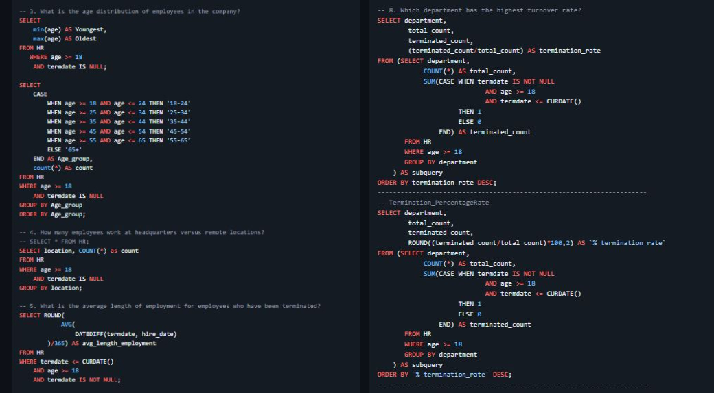

Human Resources Database (SQL Analysis)

This project leverages SQL Server to transform raw human resources data into actionable workforce insights that support data-driven HR and strategic decision-making. Designed with scalability in mind, the queries and structures developed in this project are suitable for integration into reporting tools or interactive dashboards, enabling ongoing monitoring and drill-down analysis. Overall, this project demonstrates strong proficiency in SQL Server, data modeling, data quality management, and business-oriented analytics, showcasing the ability to translate complex datasets into insights that drive informed decision-making.